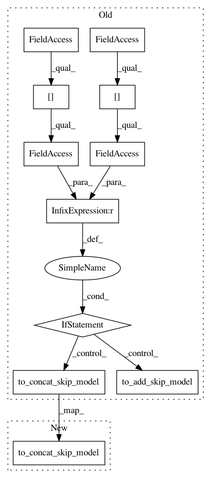

49f1d8c086e58ad0994c9b4fc38936d378a007a3,autokeras/net_transformer.py,,to_skip_connection_graph,#Any#,33
Before Change
index_a, index_b = index_b, index_a
a_id = weighted_layer_ids[index_a]
b_id = weighted_layer_ids[index_b]
if graph.layer_list[a_id].filters != graph.layer_list[b_id].filters:
graph.to_concat_skip_model(a_id, b_id)
elif random() < 0.5:
graph.to_add_skip_model(a_id, b_id)
else:
graph.to_concat_skip_model(a_id, b_id)
return graph
def to_deeper_graph(graph):
After Change
index_a, index_b = index_b, index_a
a_id = weighted_layer_ids[index_a]
b_id = weighted_layer_ids[index_b]
graph.to_concat_skip_model(a_id, b_id)
return graph
def to_deeper_graph(graph):
In pattern: SUPERPATTERN
Frequency: 3
Non-data size: 11
Instances
Project Name: keras-team/autokeras
Commit Name: 49f1d8c086e58ad0994c9b4fc38936d378a007a3
Time: 2018-05-16
Author: jin@tamu.edu
File Name: autokeras/net_transformer.py
Class Name:
Method Name: to_skip_connection_graph
Project Name: keras-team/autokeras
Commit Name: 534a56bb2f790e17160586ed8a72b88d37de9c5a
Time: 2018-05-21
Author: jin@tamu.edu
File Name: autokeras/net_transformer.py
Class Name:
Method Name: to_skip_connection_graph
Project Name: keras-team/autokeras
Commit Name: 08ce5769e843422ba1e549646df34de51e4ccf31
Time: 2018-05-10
Author: jin@tamu.edu
File Name: autokeras/net_transformer.py
Class Name:
Method Name: transform